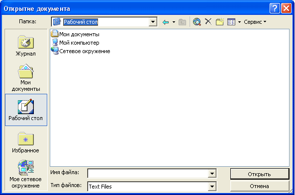
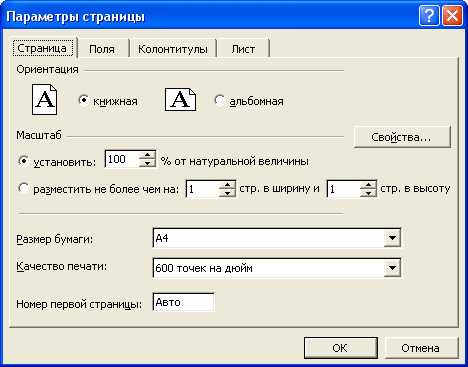
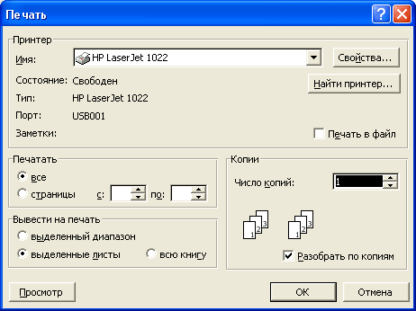

Встроенные диалоги Excel - eXcellence team
В Excel встроено множество стандартных диалоговых окон. Их можно использовать, если требуется запросить у пользователя какую-либо информацию. Например если нужно открыть файл, вызовем диалог открытия файла:
fileToOpen = Application.GetOpenFilename("Text Files (*.txt), *.txt")
If fileToOpen <> False Then
MsgBox "Open " & fileToOpen
End If

Для сохранения используется диалог GetSaveAsFilename. Полный список его параметров можно узнать в справочной системе Excel. Существуют также диалоги для настройки параметров страницы:
Application.Dialogs(xlDialogPageSetup).Show

настройки параметров печати:
Application.Dialogs(xlDialogPrint).Show

Другие диалоги:
xlDialogClear - очистка ячейки или диапазона
xlDialogDisplay - параметры отображения ячеек
xlDialogFileDelete - удаление файла
xlDialogSaveWorkbook - сохранить книгу
xlDialogSearch - поиск в документе
xlDialogWorkbookName - переименование листа